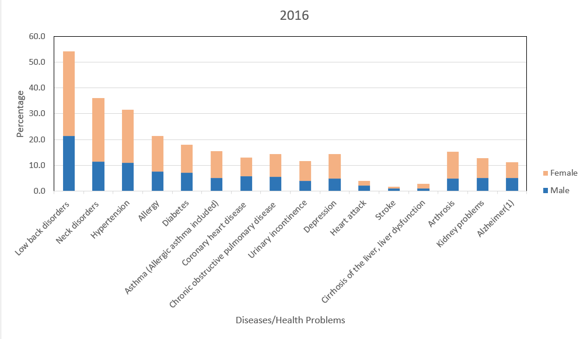
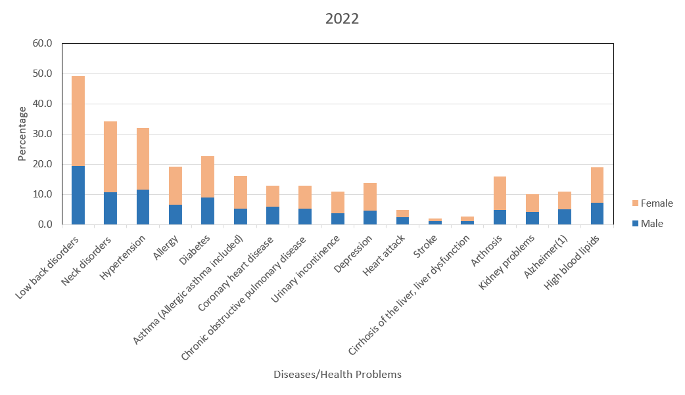
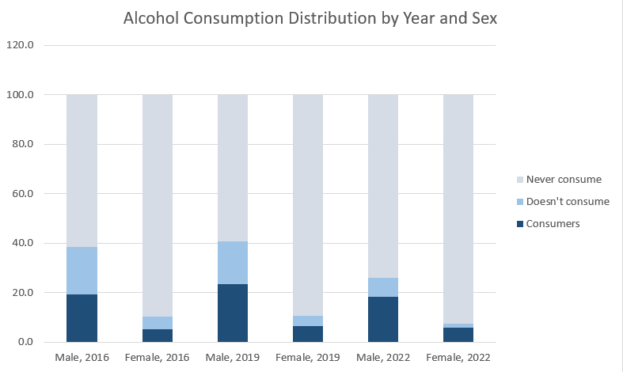

The Türkiye Health Survey wants to find out how healthy people are and collect important information about key health measures. It helps compare health internationally and gives insights into what health needs a country has for its development.
We picked the ‘Türkiye Health Survey’ data set for our EMU430 course because it’s interesting and fits well with what we’re learning. This data set gives us a lot of information about health in Turkey. We can study things like how people take care of their health, how much alcohol they drink, what common diseases there are, and the body mass index of individuals. It’s a good choice for our course because it covers a lot of important health topics in Turkey.
1.2 Our Objectives
Our main goal is to study how people’s health changes with age and differs between men and women. We want to understand how behaviors and diseases vary based on these factors. By doing this research, we hope to gather useful information that can be used to create better health policies and strategies.
Our plan is to use numbers and graphs to look for patterns and differences in the data. We believe that showing our findings visually will make them easier to understand. But before we start, we need to make sure the information we have is correct and complete. We’ll check and fix any mistakes or missing details to ensure that our results can be trusted. Following this plan, we aim to make our project’s goals, the data we’re using, and how we’re studying it clear. This will set a strong foundation for our project to move forward successfully.
2 Importing and Preprocessing Data: Our Approach
Before importing our data, we manually cleaned it by removing Turkish text and unnecessary information. Then, we used the ‘dplyr’ and ‘tidyr’ packages to improve our understanding of the data. The relevant code is provided below.
This study includes three data-sets:
2.1Percentage of Health Problems in the Last 12 Months by Sex, 2016-2022
In the data pre-processing phase, we used ChatGPT to provide necessary functions and increase the quality of our content. Some of the functions are: “mutate_at”, “na.omit”, “gsub”.
3 Exploratory Data Analysis
In our project, we are working on three data sets, all of which were sourced from the Turkish Statistical Institute’sTürkiye Health Survey that was conducted in 2022.
3.1 Dataset 1 : The Percentage of Main Diseases/Health Problems Declared by Individuals in the Last 12 Months by Sex, 2016-2022
This data set showcases the percentage of health problems by sex. Only people over the age of 15 were considered for the study, and Alzheimer was evaluated for individuals in the 65+ age group.
# A tibble: 102 × 4
Diseases Gender Year Percentage
<chr> <chr> <dbl> <dbl>
1 Allergy men 2016 7.54
2 Allergy men 2019 8.93
3 Allergy men 2022 6.57
4 Allergy women 2016 13.9
5 Allergy women 2019 15.6
6 Allergy women 2022 12.5
7 Alzheimer men 2016 5.10
8 Alzheimer men 2019 5.96
9 Alzheimer men 2022 5.07
10 Alzheimer women 2016 6.07
# ℹ 92 more rows
The first column, titled Diseases corresponds to the diseases, and the following columns represent the gender of the individual, the year the data was collected and the percentage information respectively.. If we take a look at the visualization of the data as presented below we can see that low back problems are consistently what causes the most issues, in both men and women. In general, women have declared their health problems more than men for all years that were considered for the study.

The distribution of declared health problems for both genders, 2016
The distribution of declared health problems for both genders, 2019

The distribution of declared health problems for both genders, 2022
3.2 Data Set 2 : The Percentage of Individuals’ Status of Alcohol Use by Sex and Age Group, 2016-2022
This data set showcases the percentage of individuals’ alcohol consumption status by sex and age group.
The first column of the table below shows the various age ranges from the study, starting from age 15 and going all the way up to 75+.
The second column, titled usage, has three different field values: * Consumers : Indicates the individual partakes in regular alcohol consumption. * Doesn’t consume : Means the individual has consumed alcohol before, but not anymore/not regularly. * Never consume : Indicates the individual has never consumed alcohol before.
# A tibble: 126 × 5
age usage gender year rate
<chr> <chr> <chr> <dbl> <dbl>
1 15-24 Consumers men 2016 13.1
2 15-24 Consumers men 2019 16.4
3 15-24 Consumers men 2022 11.6
4 15-24 Consumers women 2016 5.41
5 15-24 Consumers women 2019 6.25
6 15-24 Consumers women 2022 4.93
7 15-24 Doesn't consume men 2016 5.92
8 15-24 Doesn't consume men 2019 5.74
9 15-24 Doesn't consume men 2022 2.34
10 15-24 Doesn't consume women 2016 3.95
# ℹ 116 more rows
The third column shows the gender of the individuals that took part in the study, followed by the year on column 4 and the percentages on column 5.
We can further understand this data by visualizing it via a bar chart, as shown below.

The distribution of alcohol consumption habits for both genders; 2016, 2019, 2022
3.3 Data Set 3 : Body mass index distribution of individuals by sex, 2008-2022
This data set showcases the body mass index distribution of male and female individuals, as well as a total for the year of each sub-study. The data here was collected every two years starting from 2008, and ending at 2022.
# A tibble: 56 × 4
Year Sex Category Percentage
<dbl> <chr> <chr> <dbl>
1 2008 Male Underweight 2.7
2 2008 Male Normal_weight 48.1
3 2008 Male Pre_Obese 36.9
4 2008 Male Obese 12.3
5 2008 Female Underweight 5.9
6 2008 Female Normal_weight 48.2
7 2008 Female Pre_Obese 27.4
8 2008 Female Obese 18.5
9 2010 Male Underweight 3.46
10 2010 Male Normal_weight 46.1
# ℹ 46 more rows
The first column has year information. The second column indicates whether the individual is male or female. Category column has four field values:
* Underweight
* Normal weight
* Pre-obese
* Obese
The last column showcases the percentage information.